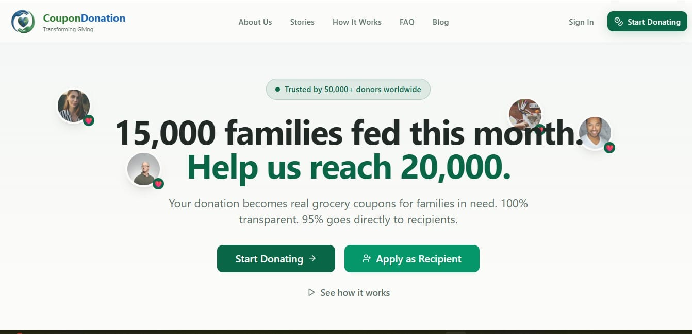

About
I'm a marketing professional based in Seattle, currently a Digital Marketing Intern at CouponDonation. My work focuses on data-driven, organic social media and content that earns attention instead of buying it.
One recent LinkedIn campaign reached 2,082 impressions in 30 days, up 343%, with a 6.3% engagement rate.
Skills
Digital Marketing • Social Media Marketing (organic) • Content Creation • Data-Driven Strategy • Adobe Creative Suite
Which one is poverty?
Three men appear troubled in different ways. The viewer tries to guess who represents poverty.

What does poverty really look like?
Poverty can feel like a void that people fall into silently.

"Need food to survive."
A human story behind statistics.
Ever wonder where your money really goes?
The uncertainty people feel when donations disappear.
Transparency Builds Trust
Clear reporting helps people see the impact of their donations.

Writing on Marketing
Short essays from my LinkedIn, on data-driven marketing and strategy.
More website visits look like progress
More website visits look like progress.
The numbers go up. The dashboard looks good. Traffic increases.
But more visits don't always mean things are going well.
Sometimes it simply means more people are arriving... and leaving just as quickly.
It can mean the message is attracting curiosity rather than real interest. Or that the audience finding you isn't the right one.
In those cases, traffic becomes a misleading metric.
Because what really matters isn't how many people visit your website.
It's what happens after they arrive.
Do they stay? Do they explore? Do they understand the value? Do they take action?
Growth isn't about maximizing visits.
It's about attracting the right people, and giving them a reason to stay.
#Marketing #DigitalMarketing #DataDriven #Growth #Strategy #Business
Effort isn't enough without clarity
You can have the best strategy. The best tools. The best intentions.
And still see no results.
Not because you're doing nothing. But because you're doing everything without clarity.
In marketing, effort isn't enough. Activity isn't progress. Data without insight is just noise.
Too many teams run campaigns, publish content, and launch ads without clearly answering one question:
Why should anyone care?
Real growth happens when you connect three things: what people actually need, what your product truly solves, what the data is telling you.
That's where performance lives.
Not in vanity metrics. Not in trends. Not in copying competitors.
But in testing, learning, refining, and repeating.
Marketing isn't about being loud. It's about being relevant.
And relevance is built, not guessed.
#Marketing #DataDriven #Growth #DigitalMarketing #Strategy #Business
A great product still needs marketing
You can build an incredible product. You can solve a real problem. You can even outperform competitors in quality.
And still fail.
Not because the product isn't good—but because it isn't marketed well.
I've seen businesses pour time, talent, and resources into what they offer, assuming that quality alone will do the talking. But markets don't work that way. People don't automatically discover value. Attention is limited, choices are endless, and even the best solutions can go unnoticed if the message isn't clear, relevant, and consistent.
Good marketing isn't about exaggeration or noise. It's about understanding people—how they think, what they need, when they're ready, and why they choose one option over another. It's about positioning, timing, and clarity. About translating a great product into a story and experience that actually reaches the right audience.
This is where data matters. Looking at user behavior, engagement, and performance isn't just about numbers—it's about insight. It tells you what resonates, what doesn't, and where friction exists. It helps turn assumptions into informed decisions and guesswork into strategy.
A great product deserves to be seen, understood, and remembered. Without intentional, data-driven marketing, growth becomes a matter of luck rather than direction. With it, businesses give their work a real chance to succeed—not by being louder, but by being smarter.